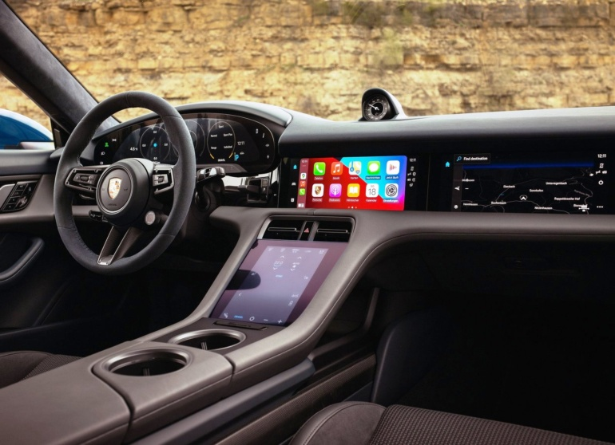
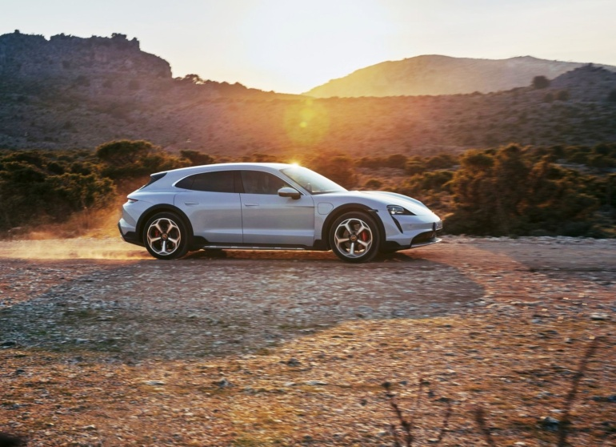
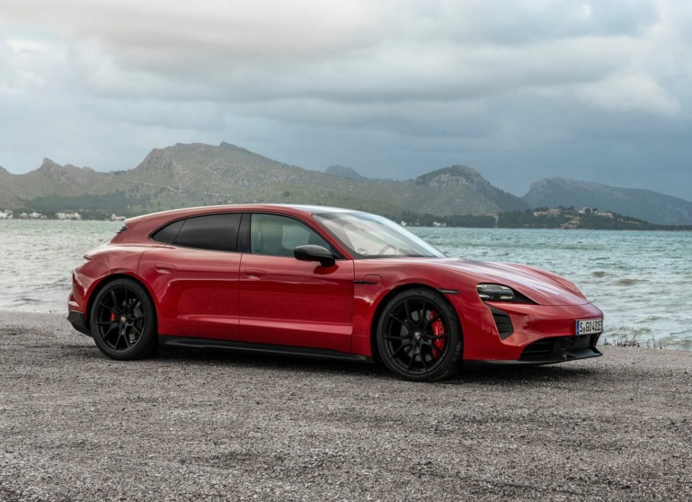
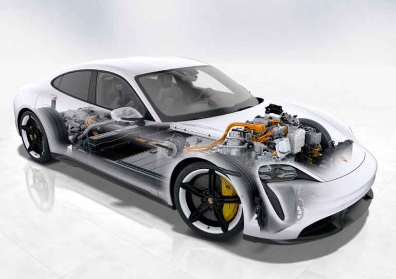

Після першого знайомства з електричним седаном Porsche Taycan і крос-універсалом Porsche Taycan Cross
Turismo
- повноцінний великий огляд, в якому детально і «по поличках» розуміємося на новому авто-феномені у форматі
електричного крос-універсала. Що ж у результаті створив німецький бренд, який раніше асоціювався лише зі
спорткарами та бензиновими автомобілями?

Позиціонування Porsche Taycan Cross Turismo
Напевно, найточніше визначення для Porsche Taycan Cross Turismo було надано ще під час першої української
зустрічі
з електромобілем влітку 2021 року: це «універсальний універсал». З одного боку – електромобіль Porsche Taycan
Cross
Turismo отримав кузов, максимально наближений до поняття «універсал»: подовжений та вищий дах ззаду, п'яті двері
з доступом до салону. З іншого боку – принагідно він отримав «бонуси» зі світу кросоверів: збільшений кліренс
(+20-30 мм щодо седана) та захисні накладки по нижній частині кузова.

Все почалося з 2019 року, коли дебютував седан Porsche Taycan. На початку 2021 року була його крос-версія Porsche
Taycan Cross Turismo: універсал, але з натяками на кросовер. Проте історія сімейства Porsche Taycan не стоїть на
місці: нещодавно дебютувала GTS-версія електромобіля. Причому тепер Porsche Taycan Sport Turismo являє собою
класичний універсал без будь-яких «крос»-добавок.
Як їде Porsche Taycan Cross Turismo
Їде чудово. Кожен розгін - це прискорення по рівній струнці, яка з'єднує електричні імпульси в нервових клітинах
водія з електричними імпульсами всередині електродвигунів Porsche. Завжди нахвалюєш електромобіль за подібну
прямолінійність у реакціях, проте це «німець» знає, як здивувати. По-перше, сам собою рівень динаміки, розгону,
прискорення дуже високий: фактично маєш справу з потужністю спортивного автомобіля. По-друге, а він не проти і
перейти на емоції: при старті з Launch Control, та при кліку передачі в приводі заднього мотора - здається, ніби
всередині Porsche Taycan Cross Turismo прокидається живий організм. Такий собі звір на колесах, готовий шматувати
асфальт 285-міліметровими шинами і зраджувати додаткове прискорення це планеті!

Хочете спокійніше? Тоді вибирайте їздовий режим Normal або Range, активуйте підвищену рекуперацію кнопкою на
кермі
- і насолоджуйтесь звичайним драйвом. Навіть у таких режимах динаміки більш ніж достатньо. При цьому електрокар
Porsche Taycan Cross Turismo примудряється поєднувати в собі гостроту керма і мінімальні крени кузова з пружною,
але не жорсткою підвіскою. Визнаю, що «крос»-версія гарна саме своєю меншою залежністю від якості асфальту: щодо
седана Taycan, тут майже немає жорстких ударів-тичків на нерівностях і менше ризики зачепити щось бамперами. Так
в електромобілі Porsche Taycan Cross Turismo можна легко розслабитися! При цьому зовсім не втративши відчуття
драйву.
Головна суть у тому, що електрокар Porsche Taycan Cross Turismo виявляється максимально універсальним не лише у
своєму
типі кузова та можливостях, а й у своєму їздовому характері.
Характеристики Porsche Taycan Cross Turismo 4S

Технічні характеристики Porsche Taycan Cross Turismo 4S>
Кузов - універсал (крос-універсал), 5 дверей, 5 місць
Габарити - 4,97 х 1,97 х 1,41 м
Колісна база – 2,9 м
Кліренс – 156 мм (регулюється пневматичною підвіскою в межах 52 мм)
Багажник - від 430 л (5 місць) до 1196 л (2 місця), плюс 84 л (передній багажник)
Вантажопідйомність – 640 кг
Мінімальна споряджена маса – 2245 кг
Мотор – два електродвигуни, для приводу передньої/задньої осі
Потужність – 360 кВт (490 л.с.) або 420 кВт (571 л.с.) у режимі Launch Control
Крутний момент – 650 Нм у режимі Launch Control
Питома потужність – 254 л. на 1 тонну та 290 Нм на 1 тонну в режимі Launch Control
Привід – повний привід
Трансмісія – 1 ст. редуктор на передній осі, 2 ст. КПП на задній осі
Динаміка 0-100 км/год - 4,1 с
Максимальна швидкість – 240 км/год
Запас ходу, комбінований цикл WLTP – 388-452 км
Місткість акумулятора – номінальна 93,4 кВтг (реально-використовується 83,7 кВтг)
Шини тестового електромобіля - Pirelli Cinturato P7 245/45R20 (спереду) та 285/40R20 (ззаду)
Ціни на Porsche Taycan Cross Turismo 4S
Гамму відкриває Porsche Taycan Cross Turismo 4 (від 87600 євро): максимум 476 к.с. та 500 Нм,
запас ходу 360-456 км, розгін 0-100 км/год за 5,1 секунди. На наступному щаблі знаходиться
версія Porsche Taycan Cross Turismo 4S (від 101 700 євро): максимум 571 л. та 650 Нм, запас
ходу 355-452 км, розгін 0-100 км/год за 4,1 секунди. На рівень крок вище - модифікація
Porsche Taycan Cross Turismo Turbo (від 139 100 євро): максимум 680 к.с. та 850 Нм, запас
ходу 345-452 км, розгін 0-100 км/год за 3,3 секунди. Нарешті, на позиції ТОП-моделі
знаходиться Porsche Taycan Cross Turismo Turbo S (від 168500 євро): максимум 761 к.с. та
1050 Нм, запас ходу 330-419 км, розгін 0-100 км/год за 2,9 секунди